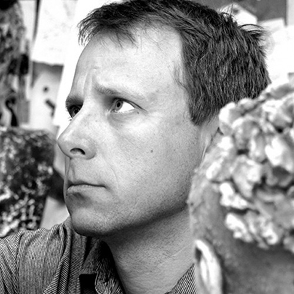
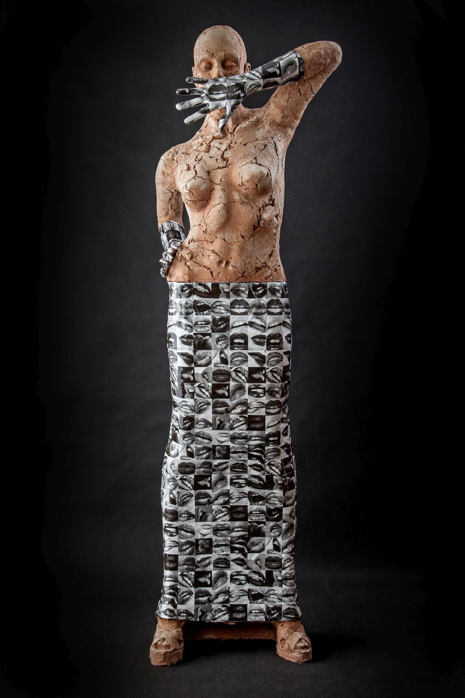
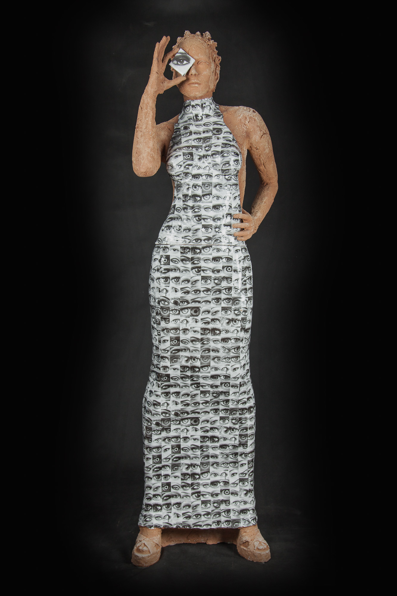

1968
Marek Zyga is born in 1968.
As a sculptor he isinterested in human being, especially in body and gestures.
He is fascinated by persons, their beaviour and reactions.
Exhibitions
2020
Dreamescape, SINT-ALDEGONDISKERK, BELGIUM
Dreamescape HASELT
Stadtpfarrer Kitzbuthel, Austria (solo exhibition)
Affordable art fair in NYC from Evan Laurie Gallery, USA
Biennale Brabant, Tilburg, The Netherland
2009
Art Up, Lile, France
Art Munster, Munster, Germany
SFEER BEURS, Gent, Belgium
Stadtpfarrer Kitzbuthel, Austria (solo exhibition)
Art Breda, Breda, The Netherland
Sfeer kunst with Vlask gallery, Gent, Belgium
DREAMESCAPE Vietach, Austria
Midtjyllands Kunst Center, Bryrup, Denmark
Arte Padova with Vecchiato Gallery, Padova, Italy
Biennale Brabant, Tilburg, The Netherlands
Form+Figure, Melissa Morgan Gallery, El Paseo, USA
SOFA Chicago, Karen Echt Gallery, USA
Tres Chic witch Hebda art, Belgium
2018
First Art Fair, Amsterdam, The Netherlands
Bergamo Arte Fiera, Bergamo, Italy
Continuum Gallery, Konigswinter, Germany ( solo exhibition )
Lucca Art Fair with Vecchiato Arte Gallery. Italy
Musee Du Val Saint Lambert, Spa, Belgium
Cafmeyer Gallery, Knokke, Belgium
Beautiful People, Vught, The Netherlands
DREAMESCAPE Haselt, Belgium
SOFA CHICAGO, Karen ECHT Gallery,Chicago,USA
GANDA with Vlask Gallery, Gent, Belgium
Biennale Veghel, The Netherlands
The Contemporary Figure, Melissa Morgan Gallery, El Passeo, California
2017
Art fair Palm Beach with Evan Lurie Gallery
Art & Antic Munster
Art Breda with Van Loon Gallery,The Netherlands
Art Frais, Spa with Art Hebda, Belgium
SOFA Chicago, Karen Echt Gallery, USA
Biennale Brabant,The Netherlands
Uniek Of Origineel, Genk, Belgium
Midtjyllands Kunst Center, Bryrup, Denmark
Dreamescape, Traun, Austria
ARTE PADOVA, Padova with Vecchiato Arte Gallery,Italy
2016
Art fair Palm Beach with Continuum Gallery,USA
LA Art Show with Evan Lurie Gallery Los Angeles, USA
Art. Boca Raton, Floryda,USA
Art. Breda, The Netherland
Cafmeyer Gallery, Knokke, Belgium
Gallery Van Loon ,The Netherland (solo exhibition)
Biennale Vuhgt, The Netherland
Art Hamptons New York with Evan Lurie Gallery
Art Fair Koln, Germany
SOFA Chicago, Karen Echt Gallery,USA
Biennale Veghel, The Netherland
2015
IQ-Artist, Amsterdam, The Netherland
Art Fair Palm Beach with Thomas Riley Gallery, USA
Art Breda with Continuum Gallery, The Netherland
Art Hamptons New York with Evan Lurie Gallery
Art Nokturn Knokke, Belgium
Art fair Koln, Germany
Biennale Brabant, Tilburg,The Netherland
Scope Miami, Miami, USA
2014
Art fair Palm Beach PISMO Gallery Denver, USA
Art fair BREDA with Van Loon Gallery, The Netherland
Continuum Gallery, Konigswinter, Germany (solo exhibition)
Alden Biesen, Belgium
Art Nokturn Knokke,Belgium
Art SOFA CHICAGO with Thomas Riley Gallery, USA
2013
Art fair ART HERNING Herning, Danmark
Biennale Vught The Netherland
Continuum Gallery Konigswinter, Germany
Dreamscapes Viechtach, Germany
Dreamscapes Ultrecht, The Netherland
Art Fair SOFA Chicago with Tom Riley Gallery USA
Karen Echt Gallery Chicago, USA
Galeria van Loon & Simons Gallery The Netherland (solo exhibition)
2012
Minerwa Gallery Malmo, Sweden (solo exhibition)
Stijl-2012, Belgium
Continuum Gallery Konigswinter .Germany
De Lange Litanie Roselare Belgium
Gallery Bram Hobro, Denmark
Ceramic from Bolesławiec MCC Bolesławiec, Poland
New Form Galery Treleborg, Sweden
Biennale Tilburg The Netherland
Art fair LINEART with Francis Hebda Gallery Gent, Belgium
2011
Szalom Galery Kraków, Poland (solo exhibition)
Galeria van Loon & Simons Gallery The Netherland (solo exhibition)
Biennale Vught The Netherland
Art Nocturne Knokke Knokke, Belgium
Pumpwerk Siegburg, Germany
Art fair LINEART with Francis Hebda Gallery, Gent, Belgium
International Ceramics Center, Bolesławiec, Poland (solo exhibition)
2010
Liliane Beelden Parade with Van Loon & Simons Gallery The Netherland
Art Nocturne Knokke Knokke, Belgium
2009
Oisterwijk Sculpture with EtienneGallery The Netherlands
Art fair LINEART Ghent with Francis Hebda Gallery Belgium
2008
Etienne Gallery The Netherlands Oisterwijk Sculpture The Netherlands
Wurtzburg Palast Germany (solo exhibition)
2007
Ceramics Museum In Bolesławiec Poland (solo exhibition)
Art fair LINEART with Francis Hebda Gallery Gent, Belgium
His sculptures are like processed images from reality, to some extent they are stories. When an idea comes to his mind and eventually takes shape, he sculpture in clay and then it is formed into gypsum. As a self-taught he is sensitive to proper technique.
Before he start a new work, he think about it verry well how he will make it. He don’t make any sketches but turns immediately a model into clay. His works are decorated with angobas, pigments and are glazed. The sculptures of Marek relate to classic sculptural forms. One can see busts, torsos, heads carrying symbolic, erotic, exposing meaning-sometimes with a certain undertone of surrealism. His ally is experience and observation.
“My allies are experience and observation. I am inspired by man, actually by relations between people, differences and similarities.”